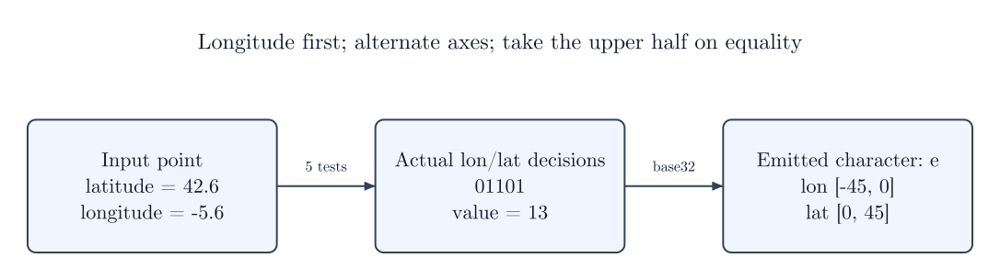
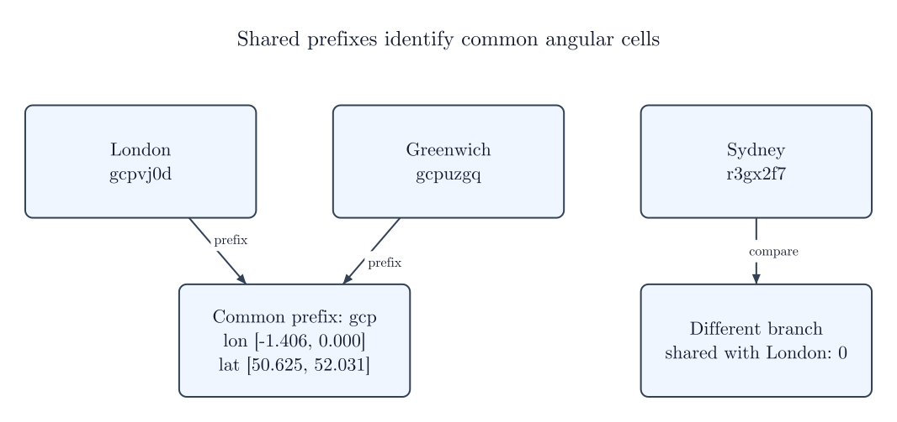
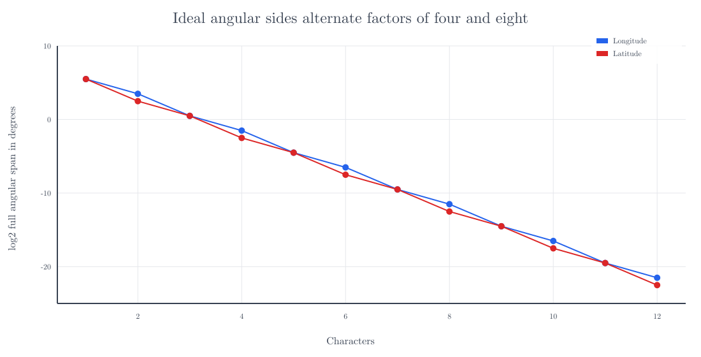
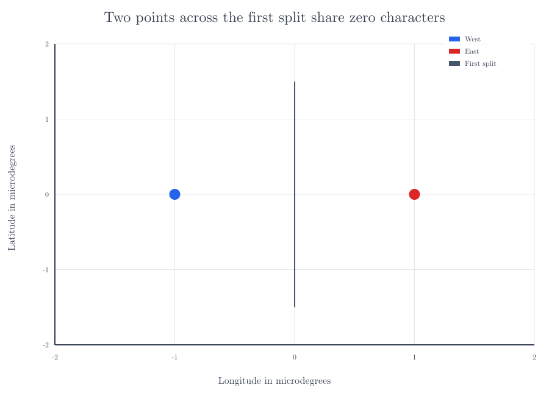
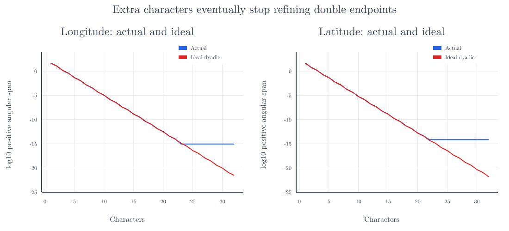
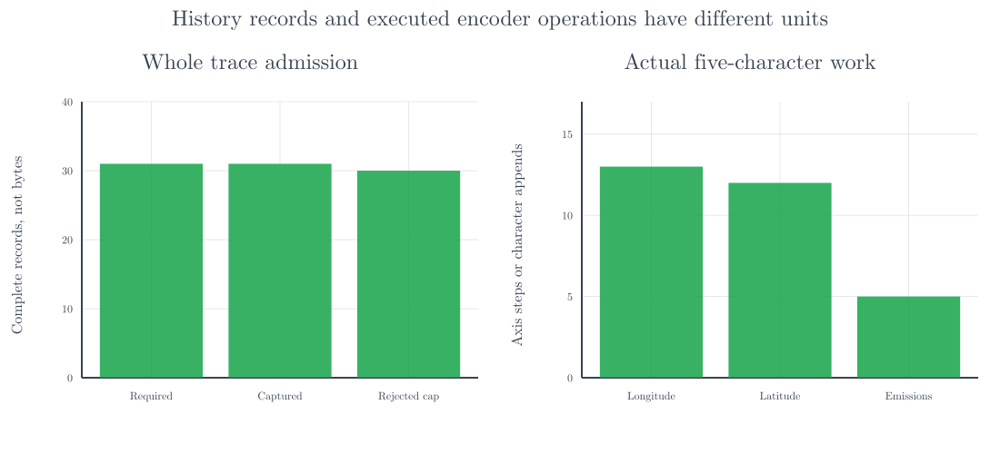

Geohash: interleaved bits, nested cells and boundary surprises
Abstract
Turn a geographic coordinate into a compact string identifying a nested angular cell. A shared prefix can locate a common cell, but nearby points can fall on opposite sides of a split and share no prefix. Geohash alternates longitude and latitude bits, then groups them into a base32 alphabet. This report follows an actual first character, reproduces the original coordinate and city examples, and derives the alternating angular shrink factors. Native cell decoding and traces also expose a numerical limit: extra characters eventually stop shrinking the double-precision endpoints. Explicit record admission, strict input checks and independent exact-rational tests make those distinctions checkable.
Five actual comparisons produce the first character
Start at latitude 42.6°, longitude −5.6°. The first longitude comparison chooses the lower half of [−180,180]; the latitude comparison chooses the upper half of [−90,90]. Three further comparisons produce the bit sequence 01101. Its alphabet index is 13, which maps to e in 0123456789bcdefghjkmnpqrstuvwxyz. The resulting first-character cell has longitude [−45,0] and latitude [0,45]. These values below come from the executing native kernel, not a local report implementation.
#include <dm/dm.hpp>
namespace dm=datamunge;
int main(){
std::filesystem::create_directories("build");
const auto t=dm::algorithms::geohash_encode_trace(42.6,-5.6,1,7);std::string decisions;
std::print("| bit | axis | lower before | upper before | actual midpoint | upper chosen | accumulator after |\n| ---: | --- | ---: | ---: | ---: | --- | ---: |\n");
for(const auto&e:t.bits){decisions+=e.upper?'1':'0';std::print("| {} | {} | {:.0f} | {:.0f} | {:.0f} | {} | {} |\n",e.step,e.longitude?"longitude":"latitude",e.lower_before,e.upper_before,e.midpoint,e.upper,e.symbol_value);}
const auto&e=t.emissions.at(0);std::print("\nActual decisions {}; emitted character {}; alphabet index {}; longitude [{:.0f}, {:.0f}]; latitude [{:.0f}, {:.0f}]; records {}.\n",decisions,e.symbol,e.symbol_value,e.bounds.lon_lo,e.bounds.lon_hi,e.bounds.lat_lo,e.bounds.lat_hi,t.captured_records);
dm::graphics::Diagram d(63,1100);dm::graphics::DiagramNodeStyle box;box.width=4.3;box.height=2.3;box.font_size=22;
d.node("point",{0,0},std::format("Input point\nlatitude = {:.1f}\nlongitude = {:.1f}",t.latitude,t.longitude),box)
.node("bits",{6,0},std::format("Actual lon/lat decisions\n{}\nvalue = {}",decisions,e.symbol_value),box)
.node("cell",{12,0},std::format("Emitted character: {}\nlon [{:.0f}, {:.0f}]\nlat [{:.0f}, {:.0f}]",e.symbol,e.bounds.lon_lo,e.bounds.lon_hi,e.bounds.lat_lo,e.bounds.lat_hi),box)
.edge("point","bits","5 tests").edge("bits","cell","base32")
.text({6,2.5},"Longitude first; alternate axes; take the upper half on equality",24).save_svg("build/hash_first.svg");
if(decisions!="01101"||e.symbol!='e'||e.symbol_value!=13)throw std::runtime_error("first actual character");
}| bit | axis | lower before | upper before | actual midpoint | upper chosen | accumulator after |
|---|---|---|---|---|---|---|
| 1 | longitude | -180 | 180 | 0 | false | 0 |
| 2 | latitude | -90 | 90 | 0 | true | 1 |
| 3 | longitude | -180 | 0 | -90 | true | 3 |
| 4 | latitude | 0 | 90 | 45 | false | 6 |
| 5 | longitude | -90 | 0 | -45 | true | 13 |
Actual decisions 01101; emitted character e; alphabet index 13; longitude [-45, 0]; latitude [0, 45]; records 7.

A prefix identifies a cell, not an exact point or a distance
At each step the active interval is bisected using (lo+hi)/2 in double arithmetic. Equality chooses the upper half. Grouping the decisions by five bits uses the alphabet shown above; a shorter encoding of the same point is a prefix of its longer encoding. Longitude and latitude decisions are interleaved most-significant bit first. This is the rectangular grid’s Morton/Z bit ordering, written in base32, not a separate alternative to Morton ordering.
[Chris Veness’s primary encoding/decoding implementation](https://www.movable-type.co.uk/scripts/geohash.html) and its [source](https://github.com/chrisveness/latlon-geohash/blob/master/latlon-geohash.js) provide the longitude-first midpoint/alphabet and bounds-decoding reference. This library preserves its own legacy required precision and double operation order. Coordinates must be finite within latitude[−90,90] and longitude [−180,180]. The new decoder is strict lowercase, treats an empty key as the world, and returns an unrounded computed center. It does not lowercase input or decimal-round that center. The two end-meridians are accepted distinctly rather than normalized.
When two keys share a prefix, both follow the same early subdivisions and lie in the same prefix cell in the ideal grid. The converse fails: close points can straddle an early split. A prefix is useful for hierarchical grouping, but it is not a metric distance or a complete radius-search predicate. Floating endpoint limits at very high character counts need an additional distinction, shown later.
Reproduce the original coordinate and city examples
The original coordinate gives ezs42 at five characters. London and Greenwich share the prefix gcp at seven characters, while Sydney begins on a different branch. Their common prefix bounds come from native decoding. These particular points illustrate one shared cell; they do not establish a universal implication from geographical proximity to long prefix agreement.
#include <dm/dm.hpp>
namespace dm=datamunge;
int main(){
std::filesystem::create_directories("build");
const auto canonical=dm::algorithms::geohash_encode_run(42.6,-5.6,5);const auto cell=dm::algorithms::geohash_decode(canonical.hash);
const std::array<std::string,3>names{"London","Greenwich","Sydney"};const std::array<std::array<double,2>,3>locations{{{51.5074,-.1278},{51.4779,-.0015},{-33.8688,151.2093}}};std::array<std::string,3>keys;
std::print("Canonical key {}; decoded latitude [{:.8f}, {:.8f}]; longitude [{:.8f}, {:.8f}].\n\n",canonical.hash,cell.bounds.lat_lo,cell.bounds.lat_hi,cell.bounds.lon_lo,cell.bounds.lon_hi);
std::print("| location | latitude | longitude | seven-character key |\n| --- | ---: | ---: | --- |\n");
for(std::size_t i=0;i<names.size();++i){keys[i]=dm::algorithms::geohash_encode(locations[i][0],locations[i][1],7);std::print("| {} | {:.4f} | {:.4f} | {} |\n",names[i],locations[i][0],locations[i][1],keys[i]);}
const auto n=dm::algorithms::geohash_common_prefix(keys[0],keys[1]);const auto prefix=keys[0].substr(0,n);const auto common=dm::algorithms::geohash_decode(prefix);
std::print("\nLondon/Greenwich common prefix {} ({} characters); London/Sydney shared characters {}; common longitude [{:.6f}, {:.6f}], latitude [{:.6f}, {:.6f}].\n",prefix,n,dm::algorithms::geohash_common_prefix(keys[0],keys[2]),common.bounds.lon_lo,common.bounds.lon_hi,common.bounds.lat_lo,common.bounds.lat_hi);
dm::graphics::Diagram d(61,1100);dm::graphics::DiagramNodeStyle box;box.width=4.5;box.height=2.2;box.font_size=22;
d.node("london",{0,0},std::format("{}\n{}",names[0],keys[0]),box).node("greenwich",{6,0},std::format("{}\n{}",names[1],keys[1]),box)
.node("sydney",{12,0},std::format("{}\n{}",names[2],keys[2]),box)
.node("common",{3,-3.5},std::format("Common prefix: {}\nlon [{:.3f}, {:.3f}]\nlat [{:.3f}, {:.3f}]",prefix,common.bounds.lon_lo,common.bounds.lon_hi,common.bounds.lat_lo,common.bounds.lat_hi),box)
.node("other",{12,-3.5},std::format("Different branch\nshared with London: {}",dm::algorithms::geohash_common_prefix(keys[0],keys[2])),box)
.edge("london","common","prefix").edge("greenwich","common","prefix").edge("sydney","other","compare")
.text({6,2.4},"Shared prefixes identify common angular cells",25).save_svg("build/hash_original.svg");
if(canonical.hash!="ezs42"||prefix!="gcp"||n!=3)throw std::runtime_error("original canonical and city outputs");
}Canonical key ezs42; decoded latitude [42.58300781, 42.62695312]; longitude [-5.62500000, -5.58105469].
| location | latitude | longitude | seven-character key |
|---|---|---|---|
| London | 51.5074 | -0.1278 | gcpvj0d |
| Greenwich | 51.4779 | -0.0015 | gcpuzgq |
| Sydney | -33.8688 | 151.2093 | r3gx2f7 |
London/Greenwich common prefix gcp (3 characters); London/Sydney shared characters 0; common longitude [-1.406250, 0.000000], latitude [50.625000, 52.031250].

Derive the angular resolution from the bit counts
After p characters there are 5p decisions. Starting with longitude gives
Every added character splits one parent into 32 angular subcells. Individual axes alternate between two and three new decisions: longitude shrinks by 8 then 4 then 8, while latitude shrinks by 4 then 8 then 4. Thus the angular area divides by 32 each character, but neither side has a fixed per-character factor of about 5.7. Odd character counts give square degree cells; even counts give longitude span twice the latitude span. These are angular shapes, not equal metric widths on Earth.
The old chart multiplied longitude degrees by 111.32 km/degree as an approximate equatorial scale. The new plot uses angular units directly, and the original program and SVG remain separately verified for compatibility. In a local spherical model the east-west length includes cos(latitude); a prefix length alone cannot specify a universal kilometre radius. In particular, five-character full angular width is 0.0439453125°, rather than a universally fixed 2.4 km side.
#include <dm/dm.hpp>
namespace dm=datamunge;
int main(){
std::filesystem::create_directories("build");
std::vector<double>p,lon_y,lat_y;std::print("| characters | longitude bits | latitude bits | ideal longitude degrees | ideal latitude degrees | longitude shrink | latitude shrink |\n| ---: | ---: | ---: | ---: | ---: | ---: | ---: |\n");
for(int n=1;n<=12;++n){const auto r=dm::algorithms::geohash_resolution(n),before=dm::algorithms::geohash_resolution(n-1);std::print("| {} | {} | {} | {:.12g} | {:.12g} | {:.0f} | {:.0f} |\n",n,r.longitude_bits,r.latitude_bits,r.longitude_degrees,r.latitude_degrees,before.longitude_degrees/r.longitude_degrees,before.latitude_degrees/r.latitude_degrees);p.push_back(n);lon_y.push_back(std::log2(r.longitude_degrees));lat_y.push_back(std::log2(r.latitude_degrees));}
auto plot=dm::graphics::RPlot::create();plot.lines(p,lon_y,"Longitude",{37,99,235},2).points(p,lon_y,"",{37,99,235},5)
.lines(p,lat_y,"Latitude",{220,38,38},2).points(p,lat_y,"",{220,38,38},5).legend({"Longitude","Latitude"},{{37,99,235},{220,38,38}})
.title("Ideal angular sides alternate factors of four and eight").xlab("Characters").ylab("log2 full angular span in degrees").y_limits(-25,10).size(1100,560).save_svg("build/hash_resolution.svg");
if(dm::algorithms::geohash_resolution(5).longitude_degrees!=.0439453125)throw std::runtime_error("five-character full angular width");
}| characters | longitude bits | latitude bits | ideal longitude degrees | ideal latitude degrees | longitude shrink | latitude shrink |
|---|---|---|---|---|---|---|
| 1 | 3 | 2 | 45 | 45 | 8 | 4 |
| 2 | 5 | 5 | 11.25 | 5.625 | 4 | 8 |
| 3 | 8 | 7 | 1.40625 | 1.40625 | 8 | 4 |
| 4 | 10 | 10 | 0.3515625 | 0.17578125 | 4 | 8 |
| 5 | 13 | 12 | 0.0439453125 | 0.0439453125 | 8 | 4 |
| 6 | 15 | 15 | 0.010986328125 | 0.0054931640625 | 4 | 8 |
| 7 | 18 | 17 | 0.00137329101562 | 0.00137329101562 | 8 | 4 |
| 8 | 20 | 20 | 0.000343322753906 | 0.000171661376953 | 4 | 8 |
| 9 | 23 | 22 | 4.29153442383e-05 | 4.29153442383e-05 | 8 | 4 |
| 10 | 25 | 25 | 1.07288360596e-05 | 5.36441802979e-06 | 4 | 8 |
| 11 | 28 | 27 | 1.34110450745e-06 | 1.34110450745e-06 | 8 | 4 |
| 12 | 30 | 30 | 3.35276126862e-07 | 1.67638063431e-07 | 4 | 8 |

Arbitrarily close points can have no shared first character
Take latitude 0 and longitudes±10^-6 degrees. The first longitude split is exactly zero. One point goes west, the other east, so their first bits differ and they share no prefix, however long the keys are. Reducing the separation keeps the same argument, including representable values immediately either side of zero. At the date line, longitude −180 and +180 describe the same physical meridian but are assigned different edge cells by this inclusive, non-normalizing encoder.
A location search must cover the relevant cells across boundaries, then apply its actual geographic predicate. The required covering set depends on the radius, latitude and chosen cell size; checking exactly eight neighbours is not a universal solution for arbitrary-radius queries. The plot is a split demonstration in microdegrees, not a projection or a physical-distance map.
#include <dm/dm.hpp>
namespace dm=datamunge;
int main(){
std::filesystem::create_directories("build");
constexpr double epsilon=1e-6;const auto west=dm::algorithms::geohash_encode(0,-epsilon,7),east=dm::algorithms::geohash_encode(0,epsilon,7);const auto shared=dm::algorithms::geohash_common_prefix(west,east);
const auto dateline_w=dm::algorithms::geohash_encode(0,-180,7),dateline_e=dm::algorithms::geohash_encode(0,180,7);const auto split=dm::algorithms::geohash_encode_trace(0,epsilon,1,7).bits[0].midpoint;
std::print("| point | latitude | longitude | key |\n| --- | ---: | ---: | --- |\n| Just west | 0 | {:.9f} | {} |\n| Just east | 0 | {:.9f} | {} |\n| West end-meridian | 0 | -180 | {} |\n| East end-meridian | 0 | 180 | {} |\n",-epsilon,west,epsilon,east,dateline_w,dateline_e);
std::print("\nNear-zero longitude separation {:.6f} microdegrees; shared characters {}; end-meridian shared characters {}; first longitude split {:.0f} degrees.\n",2*epsilon*1e6,shared,dm::algorithms::geohash_common_prefix(dateline_w,dateline_e),split);
auto plot=dm::graphics::RPlot::create();plot.points({-epsilon*1e6},{0},"West",{37,99,235},9).points({epsilon*1e6},{0},"East",{220,38,38},9)
.lines({split*1e6,split*1e6},{-1.5,1.5},"First split",{71,85,105},2).legend({"West","East","First split"},{{37,99,235},{220,38,38},{71,85,105}})
.title("Two points across the first split share zero characters").xlab("Longitude in microdegrees").ylab("Latitude in microdegrees").x_limits(-2,2).y_limits(-2,2).size(900,650).save_svg("build/hash_boundary.svg");
if(shared||dm::algorithms::geohash_common_prefix(dateline_w,dateline_e))throw std::runtime_error("prefix boundary counterexample");
}| point | latitude | longitude | key |
|---|---|---|---|
| Just west | 0 | -0.000001000 | ebpbpbp |
| Just east | 0 | 0.000001000 | s000000 |
| West end-meridian | 0 | -180 | 8000000 |
| East end-meridian | 0 | 180 | xbpbpbp |
Near-zero longitude separation 2.000000 microdegrees; shared characters 0; end-meridian shared characters 0; first longitude split 0 degrees.

Mathematical resolution and double endpoint resolution eventually diverge
The formulas above describe an ideal dyadic grid. The encoder instead repeatedly stores double endpoints and computes their double midpoint. Eventually a selected interval can remain unchanged, or its endpoints can become equal. A nonzero unchanged interval and a collapsed interval are different events. The native run exposes the first one-based bit index of each, using 0 when absent, and keeps executing every requested bit and emission.
For the original coordinate, the first unchanged interval occurs at bit 110 in the latitude updates. It remains a nonzero interval. Native longitude endpoints also stop shrinking later. At 1024 characters, ideal angular spans round to zero in double, while actual endpoint differences remain nonzero. At the poles/end-meridians, actual intervals can collapse instead. Neither continued characters nor a stable comparison means additional geographic information or a certified real-cell bound. The decoder marks limited=true when such endpoint events occur; re-encoding its computed center is not promised to recover an arbitrarily long degenerate key.
#include <dm/dm.hpp>
namespace dm=datamunge;
int main(){
std::filesystem::create_directories("build");
const auto t=dm::algorithms::geohash_encode_trace(42.6,-5.6,32,193);std::vector<double>x,actual_lon,actual_lat,ideal_lon,ideal_lat;
for(const auto&e:t.emissions){const auto ideal=dm::algorithms::geohash_resolution(int(e.characters));const double w=e.bounds.lon_hi-e.bounds.lon_lo,h=e.bounds.lat_hi-e.bounds.lat_lo;if(w<=0||h<=0||!ideal.spans_positive)throw std::runtime_error("positive plotting domain");x.push_back(e.characters);actual_lon.push_back(std::log10(w));actual_lat.push_back(std::log10(h));ideal_lon.push_back(std::log10(ideal.longitude_degrees));ideal_lat.push_back(std::log10(ideal.latitude_degrees));}
std::print("| characters | actual longitude span | actual latitude span | ideal longitude span | ideal latitude span | first unchanged bit | decoder limited |\n| ---: | ---: | ---: | ---: | ---: | ---: | --- |\n");
for(int p:std::array<int,8>{1,5,12,20,22,24,32,1024}){const auto r=dm::algorithms::geohash_encode_run(42.6,-5.6,p);const auto c=dm::algorithms::geohash_decode(r.hash);const auto ideal=dm::algorithms::geohash_resolution(p);std::print("| {} | {:.6e} | {:.6e} | {:.6e} | {:.6e} | {} | {} |\n",p,c.longitude_span,c.latitude_span,ideal.longitude_degrees,ideal.latitude_degrees,r.first_unchanged_bit,c.limited);}
const auto longrun=dm::algorithms::geohash_encode_run(42.6,-5.6,1024),pole=dm::algorithms::geohash_encode_run(90,180,32);
std::print("\nOriginal coordinate: first unchanged bit {}; first collapsed bit {}; actual bisections {}; emitted characters {}. Pole/end-meridian first collapsed bit {}; final latitude span {:.6e}; final longitude span {:.6e}.\n",longrun.first_unchanged_bit,longrun.first_collapsed_bit,longrun.work.bisections,longrun.work.emissions,pole.first_collapsed_bit,pole.bounds.lat_hi-pole.bounds.lat_lo,pole.bounds.lon_hi-pole.bounds.lon_lo);
auto lon=dm::graphics::RPlot::create();lon.lines(x,actual_lon,"Actual",{37,99,235},2).lines(x,ideal_lon,"Ideal dyadic",{220,38,38},2).legend({"Actual","Ideal dyadic"},{{37,99,235},{220,38,38}}).title("Longitude: actual and ideal").xlab("Characters").ylab("log10 positive angular span").y_limits(-25,4);
auto lat=dm::graphics::RPlot::create();lat.lines(x,actual_lat,"Actual",{37,99,235},2).lines(x,ideal_lat,"Ideal dyadic",{220,38,38},2).legend({"Actual","Ideal dyadic"},{{37,99,235},{220,38,38}}).title("Latitude: actual and ideal").xlab("Characters").ylab("log10 positive angular span").y_limits(-25,4);
dm::graphics::RLayout::create(1,2).add(lon).add(lat).size(1100,500).title("Extra characters eventually stop refining double endpoints").fit_panels().save_svg("build/hash_precision.svg");
if(longrun.first_unchanged_bit!=110||longrun.first_collapsed_bit||longrun.work.bisections!=5120||!pole.first_collapsed_bit)throw std::runtime_error("actual endpoint limits");
}| characters | actual longitude span | actual latitude span | ideal longitude span | ideal latitude span | first unchanged bit | decoder limited |
|---|---|---|---|---|---|---|
| 1 | 4.500000e+01 | 4.500000e+01 | 4.500000e+01 | 4.500000e+01 | 0 | false |
| 5 | 4.394531e-02 | 4.394531e-02 | 4.394531e-02 | 4.394531e-02 | 0 | false |
| 12 | 3.352761e-07 | 1.676381e-07 | 3.352761e-07 | 1.676381e-07 | 0 | false |
| 20 | 3.197442e-13 | 1.634248e-13 | 3.197442e-13 | 1.598721e-13 | 0 | false |
| 22 | 9.769963e-15 | 7.105427e-15 | 9.992007e-15 | 4.996004e-15 | 110 | true |
| 24 | 8.881784e-16 | 7.105427e-15 | 3.122502e-16 | 1.561251e-16 | 110 | true |
| 32 | 8.881784e-16 | 7.105427e-15 | 2.977850e-22 | 1.488925e-22 | 110 | true |
| 1024 | 8.881784e-16 | 7.105427e-15 | 0.000000e+00 | 0.000000e+00 | 110 | true |
Original coordinate: first unchanged bit 110; first collapsed bit 0; actual bisections 5120; emitted characters 1024. Pole/end-meridian first collapsed bit 109; final latitude span 0.000000e+00; final longitude span 0.000000e+00.

Complete histories, strict inputs and ownership
An encoder trace retains one initial coordinate/bounds record, 5p actual bit records and p actual emission records. Its exact complete count is
Admission checks this whole bound, vector capacities and a positive quota before initialization/history allocation. Default cap is one million records; zero disables only that optional quota. These are complete fixed-schema records, not numeric entries or bytes, and this is not a peak RAM limit. Final ordinary output, root/work metadata, working state and allocator storage are excluded. Stagnation receives no early-stop discount. There is no numerical replay, truncation, partial returned trace or caller mutation on rejection. A zero-character trace still has its one initial record. Ordinary encoding uses O(p) output bytes and O(1) other state; complete history adds O(p) records. No arbitrary positive precision cap is imposed on the scalar API, subject to representable counters and available storage.
Legacy valid-coordinate negative precision, including INT_MIN, retains zero-length compatibility. New checked run/trace/resolution counts reject negatives. All coordinate calls reject nonfinite/out-of-range values before work, even when a zero or negative legacy count would return empty. Decoder and prefix utilities validate the entire strict alphabet before arithmetic/comparison, including an invalid trailing byte beyond an already different first character. Empty decoding means the world; input is not silently lowercased or wrapped at the date line.
#include <dm/dm.hpp>
namespace dm=datamunge;
int main(){
std::filesystem::create_directories("build");
bool denied=false,negative=false,nonfinite=false,bad_key=false,large=false;
try{(void)dm::algorithms::geohash_encode_trace(42.6,-5.6,5,30);}catch(const std::length_error&){denied=true;}auto t=dm::algorithms::geohash_encode_trace(42.6,-5.6,5,31);const auto final=t.run.hash;t.bits[0].midpoint=999;t.emissions[0].bounds.lat_hi=999;t.initial_bounds.lon_lo=999;const bool owned=t.run.hash==final&&t.bits[1].midpoint!=999&&t.emissions[1].bounds.lat_hi!=999&&t.run.bounds.lat_hi!=999;
try{(void)dm::algorithms::geohash_encode_trace(0,0,-1,1);}catch(const std::invalid_argument&){negative=true;}try{(void)dm::algorithms::geohash_encode_trace(std::numeric_limits<double>::quiet_NaN(),0,0,1);}catch(const std::invalid_argument&){nonfinite=true;}try{(void)dm::algorithms::geohash_common_prefix("0","z!");}catch(const std::invalid_argument&){bad_key=true;}try{(void)dm::algorithms::geohash_encode_trace(0,0,std::numeric_limits<int>::max(),1);}catch(const std::length_error&){large=true;}
const auto zero=dm::algorithms::geohash_encode_trace(42.6,-5.6,0,1);const auto world=dm::algorithms::geohash_decode("");
std::print("| resource | required | captured | rejected cap | rejection observed |\n| --- | ---: | ---: | ---: | --- |\n| Five-character complete trace | {} | {} | 30 | {} |\n| Zero-character initial record | {} | {} | 0 (quota off) | false |\n",dm::algorithms::geohash_trace_records(5),t.captured_records,denied,dm::algorithms::geohash_trace_records(0),zero.captured_records);
std::print("\nIndependent owned records {}; negative checked count before quota {}; nonfinite coordinates before quota {}; full alphabet checked despite differing first character {}; huge trace rejected before allocation {}; legacy INT_MIN key empty {}.\n",owned,negative,nonfinite,bad_key,large,dm::algorithms::geohash_encode(0,0,std::numeric_limits<int>::min()).empty());
std::print("Empty key: world longitude span {:.0f} degrees; latitude span {:.0f} degrees; center ({:.0f}, {:.0f}); actual zero-count bisections {}; emissions {}.\n",world.longitude_span,world.latitude_span,world.latitude,world.longitude,zero.run.work.bisections,zero.run.work.emissions);
auto records=dm::graphics::RPlot::barplot({31.,double(t.captured_records),30.},{"Required","Captured","Rejected cap"});records.title("Whole trace admission").xlab("").ylab("Complete records, not bytes").y_limits(0,40);
auto work=dm::graphics::RPlot::barplot({double(t.run.work.longitude_steps),double(t.run.work.latitude_steps),double(t.run.work.emissions)},{"Longitude","Latitude","Emissions"});work.title("Actual five-character work").xlab("").ylab("Axis steps or character appends").y_limits(0,17);
dm::graphics::RLayout::create(1,2).add(records).add(work).size(1100,500).title("History records and executed encoder operations have different units").fit_panels().save_svg("build/hash_controls.svg");
if(!denied||!owned||!negative||!nonfinite||!bad_key||!large)throw std::runtime_error("trace and input contracts");
}| resource | required | captured | rejected cap | rejection observed |
|---|---|---|---|---|
| Five-character complete trace | 31 | 31 | 30 | true |
| Zero-character initial record | 1 | 1 | 0 (quota off) | false |
Independent owned records true; negative checked count before quota true; nonfinite coordinates before quota true; full alphabet checked despite differing first character true; huge trace rejected before allocation true; legacy INT_MIN key empty true. Empty key: world longitude span 360 degrees; latitude span 180 degrees; center (0, 0); actual zero-count bisections 0; emissions 0.

The native trace preserves the original encoded keys while explaining what their characters mean. Shared prefixes give nested angular cells; boundary examples refute the proximity converse. Exact bit counts explain alternating angular resolutions, and actual endpoint flags expose the gap between an ideal grid and finite arithmetic. These constant-coordinate and generated-cell experiments need no external dataset or timing benchmark, and make no physical-distance guarantee from a string prefix alone.